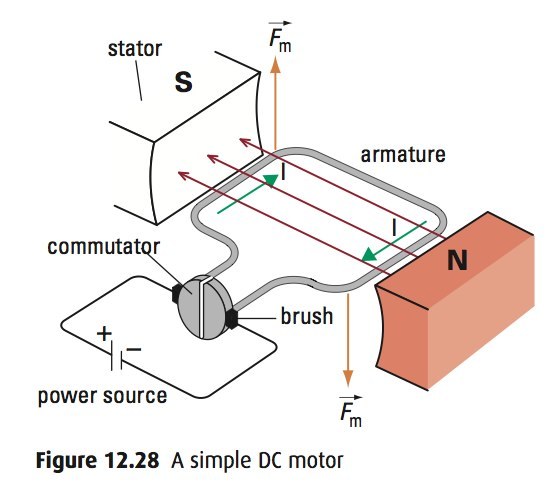
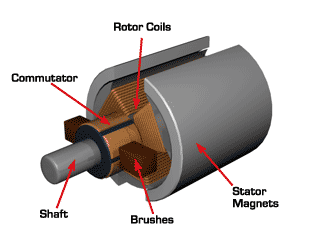
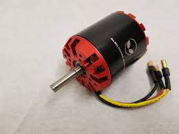
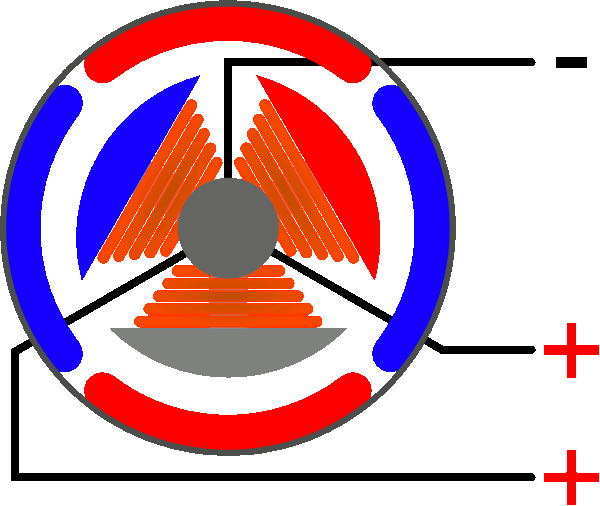
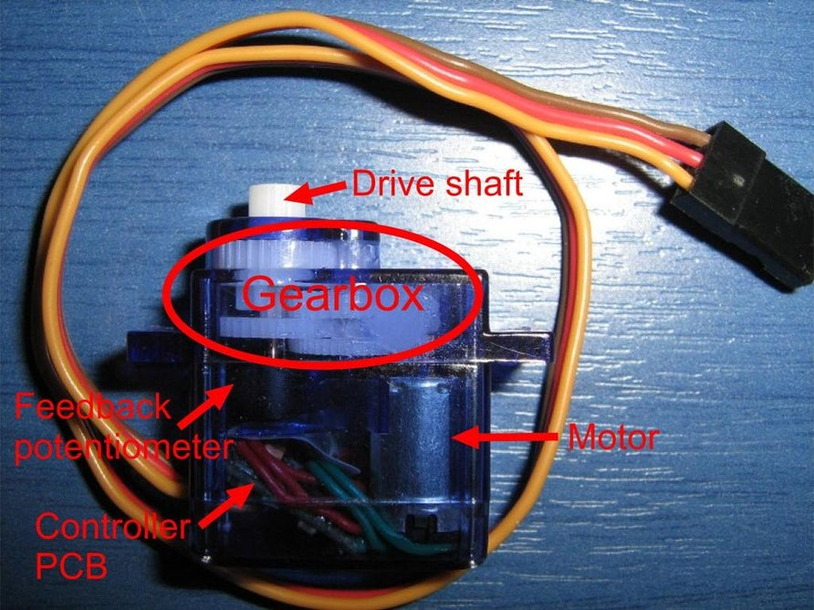
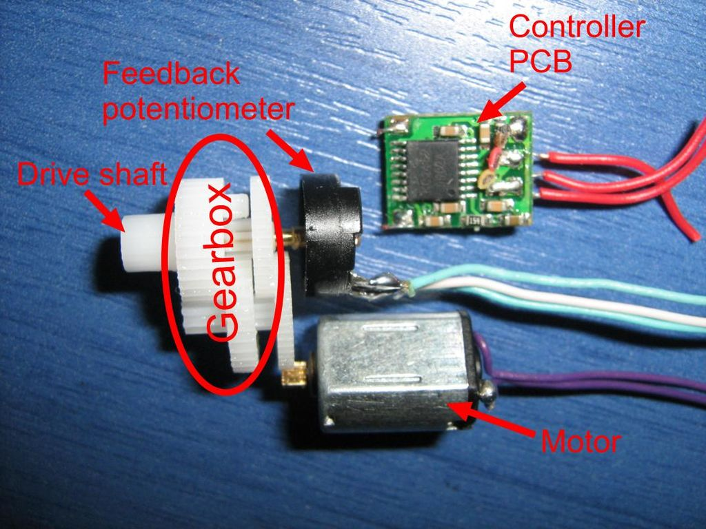
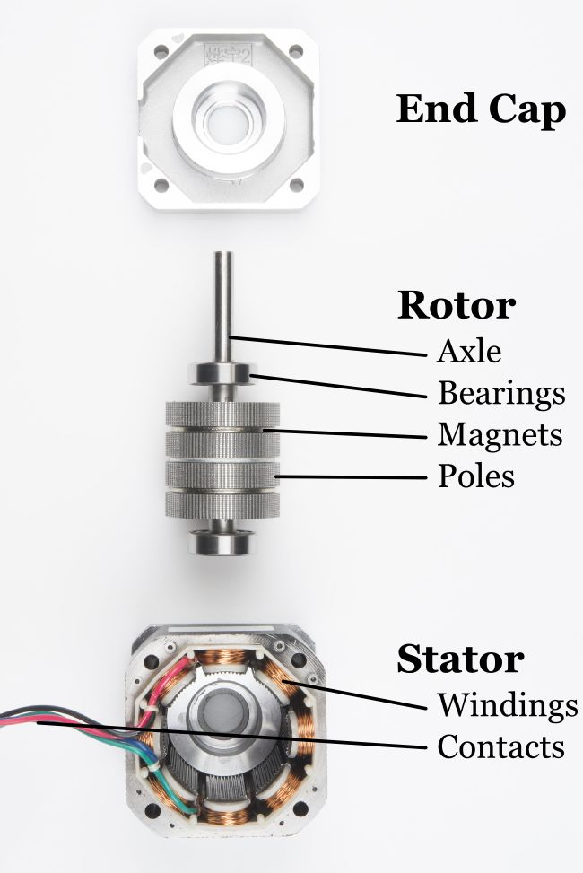
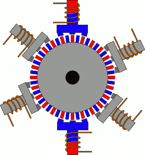

Hola!
In the last
post, we learned how to make an Automatic Sanitizer Dispenser. Now, it's time to take a
deeper look into its components.
Apart from Arduino, there were two major electronic components in the project i.e. a DC Servo Motor and
an Ultrasound Sensor. In this post, we will be primarily focusing on various types of motors.
So, let’s get started.
An electric motor is an electrical machine that converts electrical energy into mechanical energy.
It’s safe to say that motors are the most widely used robotics component and virtually no robot can be
made without using motors.
There are various types of motors available, and it's important to select the right motor for the right
purpose.
Some famous types of motors are:
As the name suggests, AC motors are driven by Alternating Current.
There are mainly 2 subtypes of AC motors: Synchronous and Induction.
These motors are rarely used in mobile robots because most of the robots are powered with direct current
(DC) coming from batteries. Also, since most of the modern electronic components use DC, it is more
convenient to have the same type of power supply for everything. Therefore, we will not go into details
of AC motors in this post.
Brushed DC motors (BDCs) are one of the easiest motors to understand and use (no doubt, these are the ones we used to study in our physics textbooks). They are widely used in applications ranging from toys to push-button adjustable car seats. They are inexpensive, easy to drive, and are readily available in all sizes and shapes. In these motors, the armature windings create an alternating current. This has to be commutated back to DC.
Brushed DC motors do this mechanically, using a commutator and brushes, which are attached to the motor’s armature (rotor). The brushes are connected to the power source, and the commutator is made up of individual segments that are attached to different rotor windings.
As the motor turns, the brushes contact the different segments of the commutator, which energizes the windings in a specific sequence. This generates a dynamic magnetic field that allows the rotor to turn continuously as its poles are attracted to the opposite poles on the stator.
| Advantages | Disadvantages |
|---|---|
|
|
Brushless DC (BLDC) motors are called by many names: brushless permanent magnet, permanent magnet ac motors, permanent magnet synchronous motors, etc.
The confusion arises because a brushless dc motor does not directly operate from a DC voltage source. As you can see from the above image (a commonly used BLDC), it has 3 wires instead of 2 (like a common BDC).
However, as we shall see, the basic principle of operation is similar to a DC motor.
The mechanics of a brushless motor are incredibly simple.
The only moving part is the rotor, which contains the magnets.
Where things become complicated is orchestrating the sequence of energizing windings. The polarity of each winding is controlled by the direction of the current flow.
The animation demonstrates a simple pattern that controllers would follow. Alternating current changes the polarity, giving each winding a “push/pull” effect. The trick is, keeping this pattern in sync with the speed of the rotor.
There are two (widely used) ways this can be accomplished. Most hobby controllers measure the voltage produced (back EMI) on the un-energized winding. This method is very reliable for high-velocity operation.
Okay... but, as the motor rotates slower, the voltage produced becomes more difficult to measure and more errors are induced. Therefore, newer hobby controllers and many industrial controllers utilize Hall effect sensors to measure the magnet’s position directly.
Controlling the speed of BLDC motors is also done by PWM but due to the complicated working nature of BLDC,
we must use a special device known as a Brushless Electronic Speed Controller (or simply, ESC).
A brushless ESC takes 3 inputs: PWM from a microcontroller, VCC (Voltage Common Collector or simply, a
positive pin), and a Ground pin. ESC outputs sinusoidal signals to the three wires of BLDC (kind of, an AC supply).
| Advantages | Disadvantages |
|---|---|
|
|
Sometimes, we might want to rotate the motor to a specific angle and with precision. In such cases, we use a servo motor.
A servo motor is a normal DC motor (mostly brushed), with a gearbox and feedback mechanism (aka Servo mechanism). The Servo mechanism consists of a potentiometer and a controller PCB.
Well, you might be thinking, what is the potentiometer doing here. It’s almost the same potentiometer that we studied in our physics books, and the work it does is very simple too. It simply has a variable resistor whose resistance depends on the rotation of its shaft. So, we can measure the rotation of its shaft by measuring the resistance across this variable resistor. Simple enough, right? Let’s move on…

So, how a Servo motor works is pretty simple.
Using a microcontroller like Arduino, We send the desired rotation angle as a PWM signal to the signal pin
of the servo (remember, the servo has 3 input pins – signal, VCC and Ground). The controller PCB recognizes
the desired input angle, checks the current potentiometer angle, and orders the DC motor to rotate
accordingly to achieve the desired angle from the current angle.
A thing worth noting is, how this feedback system makes a closed-loop.
DC Motor -> Potentiometer -> PCB -> DC Motor
“A Closed-loop Control System, also known as a feedback control system is a control system which
uses the
concept of an open-loop system as its forward path but has one or more feedback loops (hence its
name) or
paths between its output and its input.”
| Advantages | Disadvantages |
|---|---|
|
However, there is a special class of Servos known as Continuous Servo Motors which offer 360-degree continuous rotation, but then we can only control its speed and direction. |
Like servo motors, Stepper Motors are also used when we require precise control over the angle of rotation.
But Servo and Stepper motors have very different working principles (analogous to BDCs and BLDCs).
Stepper motors can be seen in use in places where high precision is needed, for example, CNC machines!
Stepper motors consist of a rotor with permanent magnets and a stationary stator that carries the windings. When current runs through the stator windings, it generates a magnetic flux distribution that interacts with the magnetic field distribution of the rotor to apply a turning force.
Stepper motors feature very high pole counts, typically 50 or more. As the name suggests, a stepper motor moves in steps. Because of the very high pole count, the motion appears to be continuous.
| Advantages | Disadvantages |
|---|---|
|
|
Pheww!! In case, you made it till here, I can surely say that your interest in robotics is unparalleled.
Thanks a lot for reading! I hope this will be useful to you!
Subscribe below to receive emails about more such awesome articles